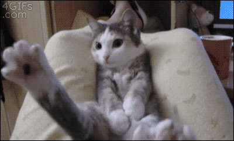
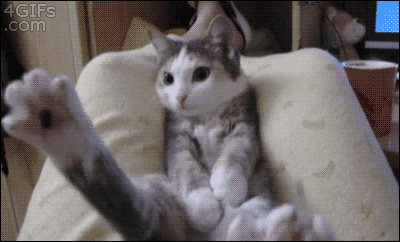

Current Officers
Manvir KaurPresident, Senior Majoring in Biology |
Chae MokVice President, Junior Majoring in Biochemistry |
 

I am passionate about dentistry, and healthcare in general, because of the greater good I see the healthcare providers in my community doing for us. In my opinion, one of the best ways to help others is through health care and medicine, which is why I have always wanted to go into the health care field. I always loved going to the dentist growing up, and as I grew older and learned more about the field of dentistry I realized that I wanted to contribute to the profession. Dentistry helps make peoples lives comfortable and boost their confidence. It would be the most rewarding experience if I could help put a confident smile on someones face! I was obsessed with collecting pencils as a child, and still have over a hundred unsharpened ones at home. Contact Manvir at manvirk@uw.edu. |
Throughout my childhood and teenage years, I had always had severely crooked teeth. This degraded my self-esteem so much that I was afraid of expressing joy because of the way my teeth looked. During my orthodontic treatment, I realized that as my smile straightened, I began to express myself through more than just a smile, but with my actions as well. Dentistry is an enabling career that opens doors for patients like myself, and I aspire to open doors for others. I have self-diagnosed trypophobia which is a fear of irregularly patterned holes. Contact Chae at chaemok@uw.edu. |
Glendy GallardoTreasurer, Senior Majoring in Molecular, Cellular, Developmental Biology |
Joelle MoussiSecretary, Junior Majoring in Microbiology |
|
As a child, I grew up enjoying going to the dentist and I think it was because I never had a bad experience with them. They were kind, compassionate, and made me laugh. Although there was the occasional filling and necessary shots, I never felt unsafe. I want to be able to give that same experience to someone else and to break the stereotype of hating to go to the dentist. Being a dentist means making an impact on a person's life and health all starting with a smile! I love playing music! I can play five instruments and most of all, I love to sing. Contact Glendy at glendyg@uw.edu. |
I began my interest in dentistry at a very young age—in first grade I was a dentist for career day! As I got older, I became passionate about the field when I started shadowing and volunteering various dentists, eventually becoming a dental assistant; hands-on experience has reassured me that dentistry is still something I am very excited about. Through assisting various surgical procedures, I learned that my favorite aspect of dentistry is being able to see the applications of biocompatibility and its potential benefits in the future of both technology and oral health care. I have karaoke dance parties by myself in my garage. Contact Joelle at jmoussi@uw.edu. |
Halley FlakeVolunteer Coordinator, Senior Majoring in Environmental Health |
Divya MadhavanPublic Relations, Sophomore Majoring in Microbiology |
|
I'm pursuing dentistry because I love helping people obtain confidence with their smile. I love biking and have finished 2 triathlons. Contact Halley at hflake@uw.edu. |
There are definitely many compelling reasons to choose dentistry as a career. Personally, shadowing at dental clinics dramatically shaped my professional goal. I realized that work can be an expression of the general intention of one’s life rather than simply an activity or a means to a certain lifestyle. I was able to identify my true passion within this field and I believe that a smile is the most precious gift you can give to a child. I wanted to be a news anchor and a weather woman before I decided on dentistry & I'm scared of the dentist. Contact Divya at divya14@uw.edu. |
Dina BassyiouniActivities Coordinator, Sophomore Majoring in Biology |
Dorothy NguyenWebmaster, Senior Majoring in Molecular, Cellular, Developmental Biology |
|
Growing up I hated going to the dentist. Like many children, to me it was just a scary place with sharp tools and injections that hurt. It wasn't until I went to pediatric dentist who explained what he was doing the whole time, that I realized dentists weren't so mean after all. As years passed, my dislike to the visit faded and my interest in dentistry grew. I hope to one day be able to make children coming to the dentist see that it isn't as scary as they thought! I started swimming before I could walk! Contact Dina at dinaalb@uw.edu. |
Throughout my childhood growing up, I always had a positive association with going to the dentist. My shadowing experiences in the dental clinics have allowed me to observe how dentists as healthcare providers reach out to others and provide to their oral health and hygiene needs. I loved how dentistry gives people a boost of confidence even in the simplest actions of improving their smiles. I believe the greatest joy is knowing when I can assist in placing a beautiful smile on someone's face. I really enjoy nature hikes and I also like running 5Ks in my spare time. Contact at ddtn2@uw.edu. |